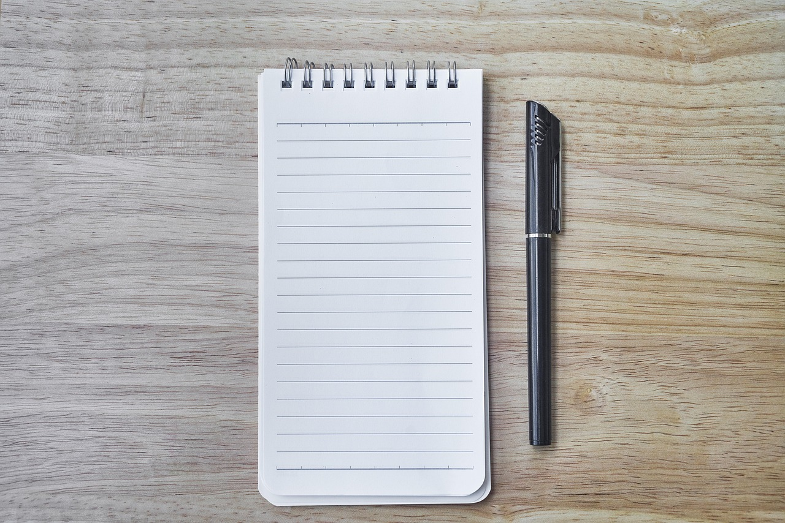
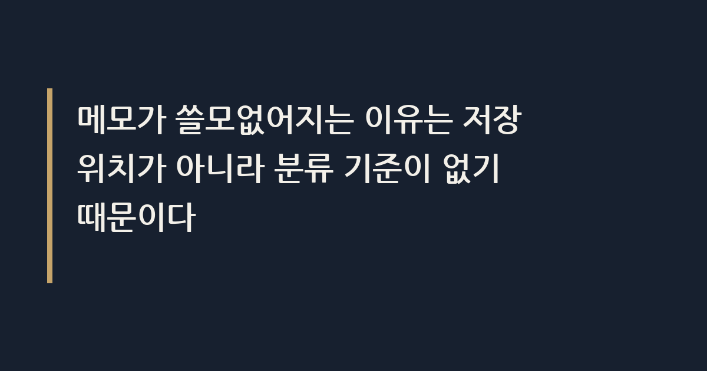
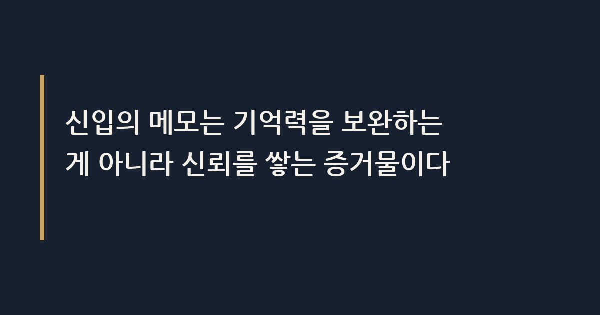

주제 신입 첫 주에 업무 메모 정리하는 방법 (evergreen / office)
제목 후보
메타 설명 신입 첫 주, 메모는 많이 쓰는데 왜 쓸모가 없어질까. 내용이 아니라 분류 기준이 없어서다. 3단 분류법과 메모 양식을 정리했다.
라벨 신입사원, 업무메모, 메모정리법, 직장생활꿀팁, 사회초년생, 신입사원교육, 업무메모양식, 신입첫주체크리스트, 메모분류법, 회사메모잘쓰는법
실용 자산 양식 템플릿 — 신입이 당장 복사해서 쓸 수 있는 메모 양식이 필요한 도구형 검색 의도라 템플릿 표를 본문에 직접 넣었다
발행 전 팩트체크
이미지 (Blogger 편집기에 드래그해 넣으세요)



몇 해 전 팀에 들어온 신입 민지는 첫 주 내내 노트북 메모장 한 페이지에 모든 걸 적었다. 회의 내용, 부장님이 던진 지시, 처음 듣는 사내 용어, 점심 메뉴 추천까지 한 줄로 쭉 이어졌다. 2주 뒤 거래처 미팅 자리에서 지난번 합의 사항을 확인해 달라는 요청을 받았는데, 민지는 스크롤을 한참 내리다가 결국 "다시 여쭤보고 전달드리겠습니다"라고 답했다. 틀린 말은 아니었지만, 그 순간 거래처 담당자의 표정이 살짝 굳는 걸 옆에서 봤다.
신입 메모 정리는 많이 적느냐가 아니라 어떻게 나누느냐에서 갈린다. 민지의 문제는 메모를 안 해서가 아니라, 지시와 질문과 잡지식이 한 덩어리로 뒤섞여 있었다는 것이다. 첫 주에 메모 습관을 제대로 들인 신입과 그렇지 못한 신입은 한 달 뒤 회의실에서 완전히 다른 사람처럼 보인다.
신입 기간 교육 담당을 몇 번 맡아 본 적이 있다. 첫 주에 신입들에게 메모 방식을 물어보면 열에 아홉은 똑같다. 노트 한 권, 혹은 메모 앱 한 화면에 시간 순서대로 받아 적는다. 문제는 이 방식이 '기록'은 되지만 '검색'은 안 된다는 점이다.
업무 메모란 지시받은 내용과 확인해야 할 질문, 그리고 혼자 알아두면 되는 정보를 구분해서 남긴 기록물이다. 시간 순으로만 쌓인 메모는 나중에 필요할 때 찾는 데 시간이 더 든다. 민지도 그랬다. 메모는 있었는데, 그 메모가 '합의 사항'인지 '본인이 궁금해서 적어둔 것'인지 구분이 안 됐다.
교육 둘째 날, 신입 열두 명에게 전날 적은 메모를 다시 펼쳐보라고 한 적이 있다. 자기가 쓴 글씨인데도 "이게 지시였나, 그냥 들은 얘기였나" 하며 한참을 들여다보는 경우가 태반이었다. 심지어 같은 페이지 안에서 부장님 지시와 옆자리 대리님이 알려준 복사기 위치가 나란히 적혀 있기도 했다. 메모는 쌓였는데, 그 메모가 무슨 용도인지는 정작 본인조차 모르는 상태였다.
신입 입장에서는 억울할 수 있다. 처음 듣는 말이 쏟아지는데 분류까지 하라니. 하지만 바로 이 지점이 첫 주와 한 달 뒤의 격차를 만든다. 분류하는 습관은 그 사람이 정보를 다루는 방식 자체를 보여주기 때문이다.
메모가 쓸모없어지는 이유는 저장 위치가 아니라 분류 기준이 없기 때문이다. 노트냐 앱이냐, 수기냐 타이핑이냐는 사실 부차적인 문제다. 실제로 메모를 잘 활용하는 사람들을 관찰해 보면 도구는 제각각이지만 분류 체계만큼은 비슷하다.
어느 팀장은 신입 면담 때 "메모를 몇 권 썼냐"가 아니라 "그 메모에서 뭘 다시 찾아봤냐"를 물어본다고 했다. 메모의 양은 성실함의 증거일 뿐이고, 메모의 분류는 업무 이해도의 증거라는 뜻이다. 신입이 작성한 메모를 슬쩍 들여다보면 그 사람이 지금 무엇을 중요하게 여기는지가 그대로 드러난다.
반대로 분류 없이 쌓인 메모는 본인조차 못 찾는다. 민지가 그랬던 것처럼, 적어는 뒀는데 그게 어디 있는지 몰라서 결국 다시 물어보는 상황이 반복된다. 상사 입장에서는 "분명히 말해줬는데 또 묻네"라는 인상이 쌓이고, 이게 신뢰 문제로 번진다.
신입들이 가장 많이 하는 실수는 회의 중 모든 말을 다 받아 적으려는 것이다. 받아쓰기에 집중하다 보면 정작 그 말이 지시인지 참고인지를 그 자리에서 판단할 여유가 없어진다. 나는 신입들에게 회의 중에는 키워드만 적고, 판단은 회의가 끝난 직후 몇 분 안에 하라고 알려준다.
예를 들어 회의 중에는 "분기 보고서, 17일, 김부장"처럼 세 단어만 적어도 된다. 회의가 끝나면 그 자리에서 바로 "지시사항 – 김부장 – 10/17까지 – 분기 보고서 초안"으로 바꿔 쓴다. 이 변환 작업을 미루면 미룰수록 나중에 그 세 단어가 무슨 뜻이었는지 기억이 흐릿해진다. 실제로 어떤 신입은 회의 중 "ERP 연동 건, 보류"라고만 적어뒀다가 사흘 뒤에는 그게 누구 지시였는지조차 떠올리지 못해서 결국 회의록을 다시 요청한 적이 있다.
요령은 간단하다. 회의 중에는 속기사처럼, 회의 직후에는 편집자처럼 움직이는 것이다. 이 두 역할을 분리하지 않으면 메모는 날 것 그대로 쌓이기만 하고 정리될 기회를 영영 놓친다.
같은 기수로 들어온 태훈은 끝까지 메모장 한 페이지를 고집했다. 분류는 번거롭다며 날짜만 적고 전부 몰아 적었다. 반년 뒤 인사 평가 면담에서 팀장이 던진 질문은 간단했다. "지난달 거래처 요청 사항, 기억나나." 태훈은 수첩을 뒤적이다 결국 찾지 못했고, 민지는 '질문' 칸에 적어둔 메모를 바로 펼쳐 답했다.
업무 능력 차이가 아니라 기록을 찾는 속도 차이였는데, 그 자리에서는 그게 곧 신뢰의 차이로 읽혔다. 팀장은 나중에 "태훈이 일을 못하는 게 아니라, 자기가 한 일을 증명을 못 한다"고 말했다. 메모는 결국 본인을 위한 변호 자료이기도 하다는 걸, 그때 처음 실감했다.
신입 때는 회의 중 손으로 급하게 받아 적는 경우가 많다. 문제는 그 메모를 그대로 두면 사흘만 지나도 본인 글씨를 못 알아보는 일이 생긴다는 것이다. 되도록 그날 퇴근 전, 늦어도 다음 날 오전까지는 손메모를 세 갈래 양식으로 옮겨 적는 습관을 들이는 게 좋다.
옮겨 적는 과정 자체가 한 번 더 내용을 정리하는 시간이 되기 때문에, 단순히 베끼는 것 이상의 효과가 있다. 10분이면 충분하다. 이 10분을 아까워하다가 일주일 치 메모가 뒤섞여서 결국 처음부터 다시 물어보러 다니는 신입을 여럿 봤다. 옮겨 적을 시간이 없을 만큼 바쁜 날일수록, 그날 메모가 나중에 가장 자주 쓰인다는 것도 아이러니한 대목이다.
옮겨 적는 습관을 말로만 강조하면 작심삼일로 끝난다. 그래서 신입들에게는 아예 퇴근 알람을 하나 더 맞추라고 권한다. 퇴근 10분 전, 그날 적은 메모를 세 갈래로 나누는 알람이다. 이 루틴을 지킨 신입과 그렇지 않은 신입은 한 달쯤 지나면 눈에 띄게 갈린다.
루틴을 지킨 쪽은 다음 날 아침 할 일 목록을 다시 만드는 데 시간을 거의 안 쓴다. 전날 정리해둔 '다음 행동' 칸을 그대로 옮기면 되기 때문이다. 반대로 루틴이 없는 쪽은 매일 아침 "어제 뭐 하기로 했더라"를 떠올리는 데 10분, 많게는 20분을 쓴다. 하루 10분이 쌓이면 한 달이면 서너 시간이다. 신입 시절 이 시간을 아낀 사람과 그러지 못한 사람의 차이는 업무량이 늘어나는 3개월 차 즈음부터 확연히 드러난다.
신입 첫 주에 권하는 방식은 메모를 세 갈래로 나누는 것이다. 지시사항, 확인할 질문, 처음 듣는 용어. 이 세 가지만 구분해도 메모의 쓸모가 확연히 달라진다.
이 세 갈래를 구분하는 이유는 각각 쓰이는 시점이 다르기 때문이다. 지시사항은 기한 전에 다시 봐야 하고, 질문은 사수를 만났을 때 꺼내야 하고, 용어는 나중에 비슷한 상황이 또 왔을 때 찾아야 한다. 하나의 메모장에 섞여 있으면 이 세 가지 타이밍을 다 놓친다.
아래 표는 신입 첫 주에 바로 써볼 수 있는 메모 양식이다. 노트든 메모 앱이든 이 다섯 항목만 구분해서 채우면 된다.
| 항목 | 작성 예시 |
|---|---|
| 날짜·회의명 | 10월 14일 오전 팀 주간 회의 |
| 지시사항 (누가·기한·내용) | 김부장 – 10/17까지 – 분기 보고서 초안 작성 |
| 확인할 질문 | 보고서 양식은 작년 것 그대로 써도 되는지 |
| 처음 듣는 용어 | ERP, 캐스케이딩, MOU |
| 다음 행동 | 사수에게 작년 보고서 파일 위치 물어보기 |
이 양식의 핵심은 '다음 행동' 칸이다. 메모만 하고 끝나면 기록이지만, 다음에 뭘 해야 하는지까지 적어두면 할 일 목록이 된다. 신입 첫 주에는 할 일이 쏟아지는데 우선순위를 정하는 감각이 아직 없다. 메모 자체에 다음 행동을 박아두면 이 문제가 자동으로 해결된다.
도구는 중요하지 않다. 수기 노트든 메모 앱이든 위에서 말한 세 갈래 분류만 지키면 된다. 다만 검색이 필요한 '처음 듣는 용어'는 텍스트로 남겨야 나중에 찾기 편하다.
보여주는 게 오히려 낫다. 회의 끝나고 "제가 이렇게 정리했는데 맞나요"라고 짧게 확인받는 신입은 꼼꼼하다는 인상을 남긴다. 다만 매번 확인받으려 하면 부담을 주니, 중요한 지시사항 정도만 확인받는 게 적당하다.
최소 3개월은 지우지 않는 게 좋다. 신입 때 적은 용어 메모와 업무 흐름 메모는 두세 달 뒤 비슷한 상황이 다시 왔을 때 가장 유용하게 쓰인다. 회사 보안 정책상 메모 앱이나 외부 저장이 제한되는 경우도 있으니, 사내 규정은 입사 초에 따로 확인해두는 게 맞다.
신입의 메모는 기억력을 보완하는 게 아니라 신뢰를 쌓는 증거물이다. 똑같은 지시를 두 번 묻지 않는 신입, 회의 끝나고 "제가 정리한 바로는"이라고 운을 떼는 신입은 분류된 메모를 갖고 있다. 반대로 매번 "어, 그게 뭐였죠"라고 되묻는 신입은 메모는 했지만 분류는 안 한 경우가 대부분이다.
민지는 그 거래처 미팅 이후로 메모 방식을 바꿨다. 지시, 질문, 용어를 나눠 적기 시작하더니 석 달쯤 지나자 회의 때 "지난번에 말씀하신 부분 확인해보니"라는 말을 먼저 꺼내는 사람이 됐다. 메모 한 줄의 방식이 바뀌었을 뿐인데, 그 사람에 대한 평가가 바뀌는 걸 옆에서 지켜보는 건 꽤 흐뭇한 일이었다.
Q. 신입 때 적어둔 메모를 나중에 다시 꺼내 봤다가 "이게 대체 무슨 소리지" 싶었던 적, 저만 있는 건 아니죠?